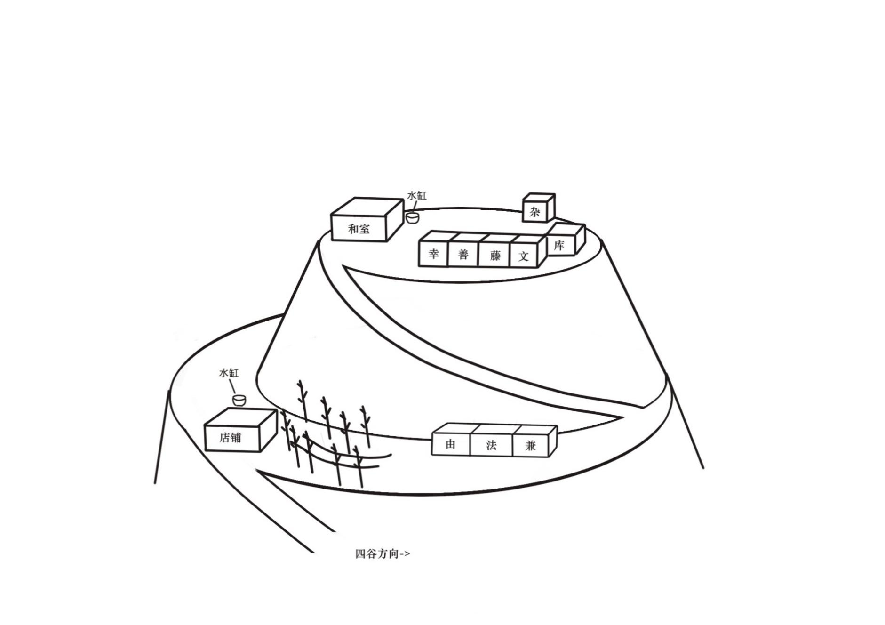

Principal Characters
Bungoro — proprietor of the Iguniya
Zenpachi — an idle vagrant
Kojiro — a fishmonger
Kanekichi — a carpenter
Hoshin — head priest of the family temple
Ofuji — Bungoro's wife
Oyu — the maidservant

In the summer of the second year of Bunkyu,[1] a rumor passed from neighborhood to neighborhood through Edo: that the eccentric rich man Bungoro meant to hold a hyakumonogatari within his own residence.
Bungoro's house had dealt in sake for generations. Three generations back, his forebears had opened a shop selling sake near Azuma Bridge, naming it the Iguniya. After he inherited the business, Bungoro applied himself diligently and built the Iguniya up, opening branch shops in many places. He could not be called one of the wealthiest men in the land, but he was at least a household of some local renown.
To say that Bungoro was eccentric was not to say he was hard to get along with. It was only that he loved to ferret out strange tales and curious happenings, and was obsessed with the yokai of the countryside. In his youth he had merely enjoyed chatting a while with his customers; as he grew older the habit only worsened. After turning the management of the shop over to his son, he moved with his wife and daughter to a hill on the western edge of the city, where he ran a small branch shop halfway up the slope. Ordinarily Bungoro would pay a few hired men to go about the city collecting hearsay, then have the strange tales they gathered told back to him, and afterward set the stories down on paper. Even so he remained unsatisfied, and resolved to convene a hyakumonogatari, so as to hear his fill in one sitting. This time he publicly summoned people who knew a great many strange and curious tales to take part in the gathering, and those selected would actually receive a single koban as reward — one must understand that even a high official's concubine might not receive one or two ryo in a whole month — so a good many people in the neighborhood took an interest in the affair.
The so-called hyakumonogatari is a game handed down among the common folk. A company gathers together, lights one hundred candles, and takes turns telling tales of the weird; each time a story is finished, one candle is blown out. It is said that when all one hundred stories have been told, something uncanny will occur.
Bungoro had one further passion: he was exceedingly fond of collecting rare and curious objects. The house halfway up the hill had a warehouse, and it was filled with things he had gathered from far and wide — the sword that legend said had struck off the head of Taira no Masakado, the sake cup Oda Nobunaga was said to have made from the skull of Azai Nagamasa, talismans drawn by the very hand of Abe no Seimei... Although anyone with eyes could see that scarcely a single one of these was genuine — indeed, no few people had played to his weakness and cheated Bungoro with fakes — Bungoro simply could not help himself. He never showed his purchases to anyone, but locked them away in the warehouse, seeking nothing but the satisfaction of his own heart.
The constable's informant[2] Nenzo had also heard the news that Bungoro was to hold a hyakumonogatari. Though a single koban tempted him, and though he had encountered no small number of preposterous things since becoming an informant, he truly had no gift for storytelling and would surely not satisfy Bungoro, so he decided he might as well not bother to join the throng.
Before long Nenzo also heard that Bungoro had already settled on the people who would attend the hyakumonogatari. News travels fast in Edo, and even without deliberately inquiring, Nenzo learned who would be taking part. The mistress of the Sekiguchiya tobacco shop told Nenzo that one Zenpachi, a regular customer of hers, had actually been chosen to attend the hyakumonogatari. To think — a mere gambling-loving vagrant, and yet because he had heard so many of the disreputable goings-on of the back streets he had been selected to attend; what good fortune, the mistress sighed to Nenzo.
Zenpachi had a big mouth. Not only did he tell the mistress the news that he himself would attend, he reeled off in one breath the names of everyone else who would be there too. First was the carpenter Kanekichi, who lodged at the Sekiguchiya; because he often went up into the mountains he had heard a good many tales of the wild hills. The fishmonger Kojiro, who supported his mother alone, was well versed in the marvels of the sea. As for Hoshin, head priest of the family temple, there was no need to say more: as a venerable old priest of great virtue, he had even personally witnessed a fair number of hauntings.
When the mistress spoke these people's names, Nenzo felt a strange, inexplicable sense of familiarity, but for the life of him he could not say where he had heard the names before.
The hyakumonogatari was to be held two days hence, when the four chosen guests would be invited to Bungoro's residence. Nenzo reckoned that whatever discussion the affair stirred up would at most be confined to whether or not something uncanny had occurred, and that within a few days everyone would forget about it.
Who could have foreseen that on the morning of the day after the hyakumonogatari, Nenzo would be roused in a great hurry by his colleague Jiuemon. Shaking the bleary-eyed Nenzo, Jiuemon said urgently: “There's been trouble at Bungoro's house — Bungoro is dead!”
At these words Nenzo came fully awake at once, hastily dressed, and rushed off with Jiuemon to Bungoro's residence.
Bungoro's house was said to be built upon a hill, but it was really only a small mound; the difference in height from foot to summit was no more than twenty or thirty meters. The most distinctive feature of this nameless little hill was that the whole of it was blanketed in dense bamboo grove. It took the two men a little under two koku (about twenty minutes) to walk from the foot of the hill, along the path through the bamboo, up to the midslope. At the top of the slope that led to the midslope stood a traditional shop — surely the branch of the Iguniya. A good many people had gathered at the shop's door, as bewildered as ants whose nest has been washed away by water.
“We are the informants sent by the magistrate's office,” Nenzo called out to the crowd.
The people who a moment before had been in such disarray, hearing that men from the magistrate had come, all wore expressions of relief; they swarmed up in a mass, all clamoring at once to tell the two informants what had happened.
Nenzo calmed them: “With everyone talking at once we truly cannot make out what has happened. May I ask — is Ofuji here?”
The crowd fell quiet, and a young man said: “Ofuji heard that Bungoro was dead and fainted dead away.”
Nenzo recognized this young man as the fishmonger Kojiro, and said to him: “Who discovered Bungoro's body?”
Kojiro said: “It was the maidservant here, Oyu. She's resting in her room now; that shock just now gave her quite a fright.”
Nenzo said to the crowd: “Everyone wait here in the shop for now. Kojiro, take us to find Oyu.”
Passing through the bamboo beside the shop, they came upon a long-house with three rooms. Kojiro explained that this long-house was used to lodge the servants and the guests. Last night both Hoshin and Kanekichi had stayed in this long-house.
The three found Oyu in the long-house, sitting up on her bed with an expression of unrelieved shock. After Nenzo and Jiuemon briefly introduced themselves, they asked Oyu to lead them together to the place where Bungoro's body had been found. Though Oyu wore a troubled look, she nonetheless agreed.
Behind the long-house was the slope that led up to the summit. The tatami room where last night's hyakumonogatari had been held, the rooms where the remaining guests and the master lodged, the storeroom, and the warehouse used to hold Bungoro's collection — all were up on the summit.
It took less than half a koku (six minutes) to climb from the midslope to the summit, and then one could see that freestanding tatami room. The room had a sliding door on each of two sides — one facing the bamboo, one facing the courtyard at the summit. On the tea table in the tatami room sat a small bonsai, though on closer inspection it was nothing more than a sprig of pine and a stone laid carelessly in a porcelain basin a foot and a half (forty-five centimeters) square and no more than two sun (six centimeters) deep. Nenzo reached out and felt the inner wall of the porcelain basin, and found that it was, oddly, faintly damp. Did this bonsai need watering?
To one side of the tatami room were several bedrooms, lodging respectively Kojiro, Zenpachi, Ofuji, and Bungoro. Oyu said that Bungoro liked to spend whole nights organizing his ghost-tales, and so he and Ofuji slept apart in two separate rooms. Beside the tatami room stood a large water vat; the continuous drizzle of the past several days had filled the vat with water. Directly opposite the tatami room was the warehouse that held Bungoro's collection; at present a great iron lock hung upon the warehouse door, with an air of being utterly unbreakable.
“This morning, seeing that the master still hadn't come out of his room, I went and knocked on his door. There was no answer from within, so I opened the door — and there I found the master lying on the floor, covered all over in blood.” Oyu led the two men to the door of Bungoro's room.
Better not to have opened the door at all; the moment it was opened, a heavy reek of blood came out, just as expected. Nenzo and Jiuemon exchanged a glance and then walked into the room.
A man lay sprawled upon the bed in the room — none other than Bungoro. There were many sword wounds on Bungoro's body, and the blood had dyed the bedclothes red. A long sword had fallen to the floor; Oyu said that sword was a piece kept in the warehouse — none other than the sword that legend said had struck off the head of Taira no Masakado. To think that after all these years it could still serve as a murder weapon — it seemed it was indeed a fake after all.
Although Nenzo was no physician charged with such examinations, he could nonetheless judge that Bungoro had been dead for some time, and that he had most likely been stabbed to death the night before.
Nenzo led Oyu outside and asked her to relate in detail exactly what had happened the day before.
Oyu said that from the previous afternoon, Bungoro had been waiting all the while in the tatami room. Not long after noon, the four guests Bungoro had invited began to arrive at the residence one after another.
The first to arrive was the priest Hoshin. Oyu led him into the tatami room, seated him, and poured him hot tea. Soon after, the carpenter Kanekichi arrived as well. About one koku (about two hours) later, the vagrant Zenpachi arrived too.
In the meantime a small episode occurred. At that time, along one side of the tatami room stood five small stepped wooden racks, upon which the candles for that night's hyakumonogatari would be set. Hoshin was seated beside the racks, and when he rose he braced himself with a hand against one of them; whereupon the foot-long board laid flat across the rack tipped straight up, and very nearly brought the whole rack down with it. It turned out that the board, which had looked of a piece with the rack, was not fastened to it at all, but merely laid flat in a groove left in the rack.
This rack had been hastily made by the carpenter Kanekichi. Seeing that a rack of his own making had made an onlooker look foolish, he laughed with some embarrassment and said: “I'd never have thought it could be tipped up so easily. Please don't let word of this get out, or my reputation will be ruined.”
After about another koku had passed, the last guest, the fishmonger Kojiro, arrived as well. Once everyone had assembled, Oyu was to fetch the candles for the hyakumonogatari from the storeroom; Kojiro volunteered to go with Oyu to fetch them. The candles used that night had been specially bought — thin-wicked candles, which could burn for a longer time.
At the time, after the candles had been taken there were not many candles left in the storeroom; Oyu recalled there were probably only three or four candles remaining. Back in the tatami room, Oyu arranged the candles upon the racks. The racks had four tiers, with five candles set on each tier. It took her quite a while to fix all the candles upon the racks.
As the four invited guests were all visiting the summit residence for the first time, Bungoro proposed to show everyone his newly acquired inro — said in legend to have been used by a Shogun — and so he had Oyu go fetch the warehouse key from the shop and bring the inro out. The padlock on the warehouse was a specially made great lock with only a single key; Bungoro said that the last time he had used the key he had put it in a drawer by the shop's door, and bade Oyu return it there once she had taken it this time.
After everyone had viewed the inro, Oyu returned it to the warehouse and returned the key to the shop down below. It was just about suppertime, and everyone ate a simple supper at the shop on the midslope.
After supper, the mistress Ofuji was to go down the hill to visit a friend. Bungoro instructed her that if the hyakumonogatari had not yet ended by the time she returned, she should wait at the shop on the midslope and not come up the hill to disturb them, and should return to her room only after the hyakumonogatari had ended. The other shop hands had all gone home as well. Kojiro asked whether they ought not lock up the shop; Bungoro said that out here in the wilds there was no one likely to come and steal anything, and that it would not be too late to lock up once Ofuji returned.
Lighting the candles with the fire-striker kept in the tatami room, the five began to take turns telling stories, while Oyu kept watch to one side, charged with pouring tea for everyone. At that time both of the sliding doors, front and back of the tatami room, were thrown fully open, and as time passed everyone could see the sun gradually sink, until before long it grew completely dark. Nenzo asked Oyu whether anyone had behaved unusually during the course of the hyakumonogatari. Oyu recalled that at the time everyone had been quite absorbed in the telling, and that apart from going to the privy beside the tatami room to relieve themselves, there had been almost no irrelevant behavior. The one thing worth mentioning was that partway through, Kanekichi said he was afraid that if he drank any more tea he would not be able to sleep that night, and so wished to drink a cup of water. Oyu offered to fetch the water for him, but he did not wish to trouble her and insisted on going himself. Oyu could only tell him where the water tap and the cups in the shop were to be found.
After this, nothing unusual occurred right up until the last story. After the ninety-ninth story had been told, only a single guttering candle remained in the room, giving off its faint light. Everyone fell silent, waiting for the host of the gathering — Bungoro — to tell the final story.
Bungoro first took a sip of tea, then said: “I trust that everyone gathered here knows that after the last candle is blown out, something uncanny will occur. But does everyone know just what this so-called uncanny thing is?”
The company remained silent.
“Toriyama Sekien records in his Gazu Hyakki Yagyo that if the last candle is blown out, it summons a yokai called the Aoandon, which drags the teller of the final story down into the Hell of Incessant Suffering. I am about to tell the last story now, and I cannot be sure whether a yokai will truly come to carry me away. And so I must leave this story behind.
“Ten years ago, a man was murdered not far from this very place.”
At these words, Nenzo at last remembered where he had seen these people's names. It had been an unsolved case told to him by a senior man at the magistrate's office. The merchant Chotaro had been found dead at the roadside one morning, and a netsuke[3] he carried on his person had vanished without a trace — a netsuke that, legend said, had once been the property of the famous painter Kitagawa Utamaro.
And the people who had attended yesterday's hyakumonogatari were, every one, connected to Chotaro. Zenpachi had once worked under Chotaro; after Chotaro died, his wife dismissed all the servants, and Zenpachi had thereupon become a vagrant. The carpenter Kanekichi was a fellow townsman of Chotaro's; it was Chotaro who had introduced him to work, allowing Kanekichi to gain a foothold in Edo. Kojiro and Hoshin had both been friends of Chotaro's. One could say that Chotaro's death had brought ill effects upon all four men.
Oyu said that the last story Bungoro told that night was of a certain man who, out of covetousness for a netsuke, did another man to death. Bungoro further hinted that the murder weapon had been that very treasured heirloom sword of his. He said, in a hollow voice: “That night, once he had seen that man's netsuke, he could no longer control himself. He invited that man to his home, and on the pretext of viewing the warehouse together, used the treasured sword hidden inside to kill him. Seeing the corpse fallen on the floor, he repented at once. In his panic, he took the netsuke from that man's waist, then dragged the body to the roadside. Only after returning home did he discover that, in cutting the man down, he had unwittingly also struck the netsuke. That ineradicable sword-mark upon the netsuke was the crime he could never escape. Each time he looked upon that netsuke, his heart grew unbearably oppressed — and yet, no matter how he tried, he could not summon the courage to turn himself in. But neither did he wish to carry this secret into his coffin, and so he could only tell the matter to his friends as a story, by way of unburdening himself.” Although he did not name who the characters in the story were, everyone understood that the dead man in the story was Chotaro, and that the murderer was Bungoro himself.
When they heard Bungoro tell this story, everyone was stunned. Kojiro said: “Please, do not make such jokes.”
But Bungoro offered no defense; he merely blew out the last candle, and the whole tatami room sank into darkness.
Nothing happened.
Afterward Oyu lit a lantern and saw everyone back to their rooms. As she was seeing Kanekichi and Hoshin to the long-house on the midslope, Kanekichi, heedless of Oyu's presence, said viciously that they had in fact long suspected Bungoro of being the man behind it all, but had never been able to find proof; those fellows at the magistrate's office had always kept close company with Bungoro, and had never so much as searched his house — they had let him off after a couple of questions. A few commoners like themselves could never persuade the lords of the magistrate's office, and in the end the matter had been ruled a robbery-murder and left at that. This time they had meant to find an occasion to force him to confess, and who could have foreseen that he would confess of his own accord.
Hoshin, for his part, said it would not do to leap to conclusions; he believed a man would choose at the end of his life to repent his sins, but did Bungoro's saying he did it truly mean he had done it? He had produced no proof; perhaps he had only meant to tease everyone.
After seeing everyone back to their rooms, Oyu too returned to her own room to rest, and nothing worth mentioning happened until the next day, when Bungoro was found dead. Upon discovering Bungoro's death, Oyu first informed Ofuji, who fainted the moment she heard the news. With no other recourse, Oyu first told the guests that the master was dead, then used the key to open the shop door, and found that the warehouse key was still sitting safely in the drawer of the counter.
At this point the shop hands arrived as well. Oyu had a hand go down the hill to report to the authorities, while she herself gathered the guests before the shop to await the arrival of the men from the magistrate's office.
Nenzo and Jiuemon came to the racks and examined the hundred candles upon them one by one, finding that the wax dripped from every candle was intact — proof that none of the candles had been removed or cut short. Nenzo did notice, however, that the candles in the first and second rows of the leftmost rack were oddly about the same in remaining length, and that, strangely, the tops of those candles had a good deal of congealed wax gathered upon them, like a thin shell protecting the wick.
“Are there no lamps in any of the rooms of this house?” Nenzo asked.
“No,” Oyu answered. “The master and mistress always go to bed early and have hardly any need to light the night. This house originally had only two lanterns that could be used for light; last night one lantern was taken away by the mistress, and the other was in my own hands.”
Nenzo said thoughtfully: “Could you take us to have a look at the storeroom and the warehouse?”
Oyu nodded and said: “Of course — but I'll have to go down the hill first to fetch the warehouse key.”
“Is that the only key to the warehouse?” Nenzo asked.
Oyu nodded and added: “Because the lock was specially designed, there is only the one key. But in truth the master did not particularly prize his collection — he thought no one would come specially to steal it — and so he simply left the key carelessly in the drawer of the shop counter. Only the mistress and I have keys to the shop; the other rooms have no locks at all.”
After Oyu had fetched the key, the three of them together examined the storeroom and the warehouse. Just as Oyu had said, there were only three candles left in the storeroom — though whether any were missing, Oyu could not say for certain.
As they came out of the storeroom, Nenzo saw that there was a window in the wall of the warehouse nearest the storeroom; at present the window stood wide open, just wide enough to admit a person. One would never notice this window unless one walked over to that side, but anyone coming out of the storeroom would surely notice it at a glance.
“Was that window open all along?” Nenzo asked. Oyu answered that the window was normally locked from the inside, and that yesterday when they were fetching the candles Kojiro had even asked her about it; at the time she had told him that the window was always kept locked. But yesterday, when she went into the warehouse to fetch the inro, she had smelled a moldy odor in the warehouse, and so had opened the window to air the place out.
“Imagine — if I cared about the things in that warehouse, it would be hard to keep from glancing over that way as I came out of the storeroom,” Nenzo said to Jiuemon. “And then I would surely see that window.”
Oyu used the key to open the great lock on the warehouse door and led the two men inside. There was no lighting in the warehouse; all the light came from the sunshine filtering in through the door and the window, and the warehouse was pitch dark. Oyu specially lit a lantern for the two of them, and by its feeble light Nenzo and Jiuemon rummaged about in the warehouse — and actually did find that legendary netsuke, a block of wood carved in the form of a hannya. They also found the scabbard of that sword, hanging in a very conspicuous spot in the warehouse.
Nenzo nodded; it seemed he already had a thread to follow. He said to Jiuemon: “Now the only thing left to decide everything is the word of the mistress, Ofuji. The others will surely only say that they stayed in their rooms all that night and went nowhere at all.”
And just as Nenzo had foreseen, all four guests who had been on the hill the previous night said they had stayed in their rooms the whole night, gone nowhere at all, and had no knowledge of the others' movements.
By this time Ofuji had come round, and after drinking a cup of water she related, in a trembling voice, what she had seen and heard the night before.
Last night she had gone to visit a friend in Yotsuya, but because on the way back she had only halfway along remembered that she had forgotten her handbag, she had been delayed a good while, so that it was already rather late by the time she returned to the Iguniya.
Nenzo said, somewhat surprised: “You actually didn't simply stay the night at your friend's house, but hurried back? Traveling a road that late at night isn't very safe.”
Ofuji said: “That's just why being able to return safely may be counted good fortune. Thinking back on it now, it still frightens me.”
She had returned to the Iguniya together with a servant, and seeing that there was still light in the summit tatami room, she remembered Bungoro's instruction and sent the servant back to rest, while she herself rested at the counter by the shop door. The moon was bright and clear that night, and even without a lamp one could see clearly near the shop door; so Ofuji set the lantern outside the door, and from the window by the counter watched the faint candlelight of the tatami room, glimmering through the gaps in the bamboo, slowly grow weaker.
After a while, she suddenly heard the sound of something breaking behind the shop, and rose to go look. She found that, for some reason, a water vat set behind the shop had shattered, and the water had spilled all over the ground.
Thinking it was perhaps some small animal of the hill that had run past, dislodging a loose stone that had fallen and broken the vat, Ofuji returned to the shop door. But thinking back on it now, that vat was finely made and quite sturdy; a small animal or a falling stone could hardly have broken it. Surely someone had deliberately smashed that vat. Only when the light in the tatami room had gone out completely, and she felt that no one would come again to the shop to fetch anything, did Ofuji prepare to return to her room to rest. Normally a servant, before leaving, would inspect the shop inside and out to guard against any open flame left unextinguished; for some reason, Ofuji felt a little uneasy today, and spent an extra koku and more (a little over ten minutes) inspecting the inside of the shop. But this was, after all, not ordinarily her task, so she did not inspect it especially carefully, and so she did not remember whether the warehouse key was still in the shop at the time.
For some reason, Ofuji tossed and turned that night, utterly unable to sleep, as though something ill had happened, and in the end did not sleep a wink until daybreak. She assured Nenzo and Jiuemon that, after she returned to her room that night, no one could have entered Bungoro's room, and that from the moment the tatami room's light went out to the moment she returned to her room had been less than half a koku (about twelve minutes).
“It must have been the Aoandon that carried him away! This is all the curse of the Aoandon!” Ofuji, unable to hold back any longer, burst into tears.
“Madam, I assure you, this was most certainly not the work of any yokai. One of the four guests last night murdered your husband. Once the doshin from the magistrate's office arrives, I believe the truth will soon come to light,” Nenzo consoled Ofuji.
Leaving Oyu and Ofuji in the room, Nenzo and Jiuemon withdrew outside the door. Jiuemon asked: “How do you know someone killed Bungoro?”
Nenzo said, with an air of mystery: “Because I quite agree with what the priest Hoshin said — one certainly cannot assume that Bungoro was telling the truth; one has to look for evidence. The murderer must have entered that warehouse, found the netsuke inside, and compared the sword-mark upon it with Bungoro's treasured sword, thereby learning that Bungoro had indeed committed the murder.”
He pointed to the bamboo grove encircling the summit and said: “This bamboo grove covering the whole hill screens all these houses completely. Even the mistress only noticed the light in the tatami room once she had walked all the way to the shop. Never mind the summit — from the foot of the hill one probably couldn't even be sure of seeing the light at the midslope. Even Madam Ofuji only noticed the light in the tatami room once she had returned all the way to the shop. Just imagine — there should be only one spot on this hill from which one could see Madam Ofuji coming home up the slope.”
“You mean the shop at the top of the slope?”
Nenzo said with a smile: “Let me give you a hint. Suppose I now asked you to go to the shop to fetch a cup, and then go to the room next door to fetch something else for me — how would you go about it?”
“Uh, I suppose I'd fetch the thing first, then the cup, and bring them both to you at the end — after all, the room next door is closer.”
“Mm-hm. Well then, do you know now who the murderer is?”
Seeing that Jiuemon still wore a baffled look, Nenzo sighed helplessly and said: “Very well, let me give you one more hint: the difference in what each man knows. Not everyone is able to grasp the whole situation; each person acts according to what he himself knows. You might try thinking from that direction about who the murderer could be.”
Jiuemon's tightly knit brows at last gradually smoothed out; it seemed he now knew who the true murderer was.